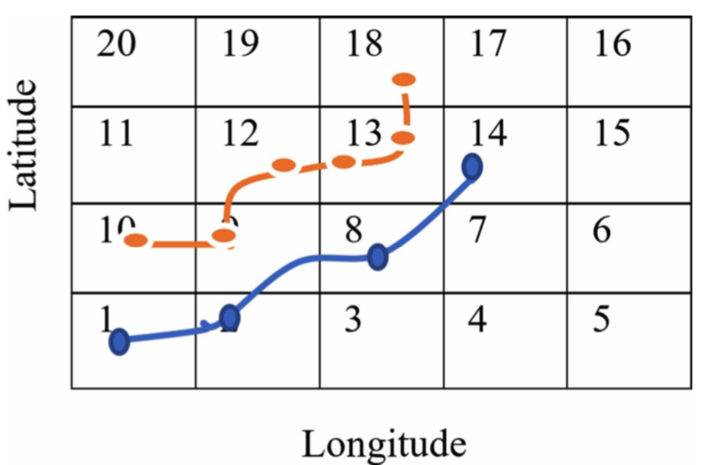
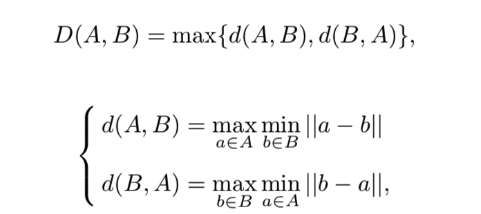
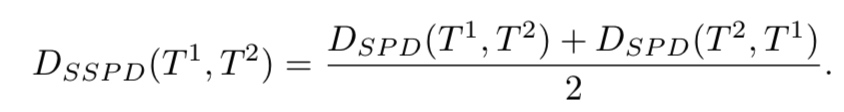
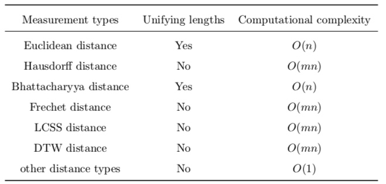
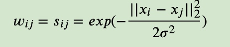

所属 Topic：轨迹分析 · 类型：专题资料
3. 轨迹聚类综述#
轨迹聚类的方式总的来说有三大类：无监督的、有监督的、半监督的。轨迹聚类能够探知时空数据的潜在信息，并且能有很多的实际应用场景。比如：物体移动预测、交通监控、活动理解、异常检测、三维重建等。
一条轨迹数据的基本构成可以看做是
$Trajectory = (Tr_1, Tr_2, ....Tr_n)$
其中每个Tr_i=(x_i,y_i,t_i, 其他信息), 其他信息可能包括速度、方向、加速度等等。
为了进行聚类，必须要衡量轨迹之间的相似性，而不同轨迹数据面临采样不一致、长短不同等问题。所以在聚类开始之前会有很多的前期预处理工作。
3.1 相似性预处理#
对轨迹聚类前期的准备工作主要是对数据进行变换。主要有如下步骤:
要求轨迹长度相同的-轨迹transformation
对于要求轨迹长度相同的才能计算相似性的方法，比如欧式距离，就需要首先将两条轨迹进行变换，或者是投影到另一个子空间。
(1) transformation 方法
* linear transformation. 将轨迹表示成basic trajectory的线性组合
* curve fitting，转到参数空间， e.g B-spline curve.
* vector fields
* PCA
* DFT 离散傅里叶变换
(2)重抽样方法
但是会有信息损失，需要加稀疏正则
(3)sub-trajectory.
需要提前对轨迹进行segmentation，比如根据changing point或者是速度、方向等。 这里有一些常用的轨迹切分方法：MDL最小描述长度，DP算法，MBR(minimum bounding rectangles)。 此外还有基于region进行切分的
(4) 根据poi点。 比如 A survey of vision-based trajectory learning and analysis for surveillance。包括进出门、逗留等。还可以对points设置不同的重要性Dense scene reconstruction with points of interest
(5) Scale-invariant Features？？
一些刻画曲线的统计指标信息吧。 HOG(histograms of oriented gradients), HOF(histograms of optical flow)
（6） 其他
'String-based feature representation for trajectory clustering'中采样了网格化的方法，将轨迹映射到了网格上，将数字字符化。
首先利用DP算法将每条轨迹都搞成一样长度的

基于字符的距离度量方式有：编辑距离、q-grame based距离、
3.2距离/相似性度量#
数据相同长度：
* 欧式距离
可以不同长度：
-
hausdorff distance 每个点到另一条轨迹的最短距离的最大值

-
Bhattacharyya distance 是用来衡量两个概率分布是否相同的
$D(p,q)=-ln(\sum \sqrt{p_iq_i})$ -
Fréchet distance(弗雷歇距离） 狗绳距离
-
DTW
- LCSS 最长公共子序列
其他：
* SSPD

T1上的点p到T2 的距离定义为：min(d(p,q)), q属于T2.而D_{SPD}(T_1, T2)= mean(D(p, T2))
从数据类型上来看主要包括：数值型和string型，数值型的主要是location的(x,y)坐标，string型的主要是根据(x,y)映射后的loc信息，比如poi点等
对距离的汇总比较

3.3 聚类-无监督#
| 方法 | 算法举例 | 参考 |
|---|---|---|
| partition based | ||
(1) densely based
DBSCAN ,比如对于sub-trajectory
KMEANS ,FCM(fuzzy C-MEANS)
(2)层次聚类
- agglomerative clustering 自下而上，以及在此基础上出现的HITS
- divisive clustering 自上而下，以及在此基础上出现的Test-and-Divide (TAD)
(3) 谱聚类
计算效率快，但是只适合同长度的。是一种基于图论的方法。对于一个图G=G(V,E),其中V={v1,v2...vn}即是顶点的集合，E是边的集合，即E={w_ij}表示顶点i与顶点j之前的权重。
谱聚类的基本想法就是把所有的数据看做空间中的点，通过定义边之前的权重，然后进行切图，将距离较近的点切在一起，距离较远的点分开。所以说是一种基于图的聚类。
对于邻接矩阵W的构建，一般是根据相似矩阵𝑆来获得邻接矩阵𝑊。

聚类步骤：
* 计算图的Laplacian矩阵L=D-W （D为度的对角矩阵，W为边的权重矩阵）
* 对Laplacian矩阵进行特征值分解，取其前个特征值对应的特征向量，构成的特征向量矩阵；
* 利用K-Means聚类算法对上述的的特征向量矩阵进行聚类，每一行代表一个样本点。
（4）神经网络
基于SOM（自组织映射网络）
(5) Co-Occurrence Decomposition
Trajectories are viewed as a bags of words where similar bags contain similar words。该方法需要提前定义a set of vocabulary。
https://iksinc.online/tag/co-occurrence-matrix/
参考资料#
相关学者 Brendan Tran Morris https://ieeexplore.ieee.org/author/37391430100
- A survey on trajectory clustering analysis
- Review & Perspective for Distance Based Trajectory Clustering